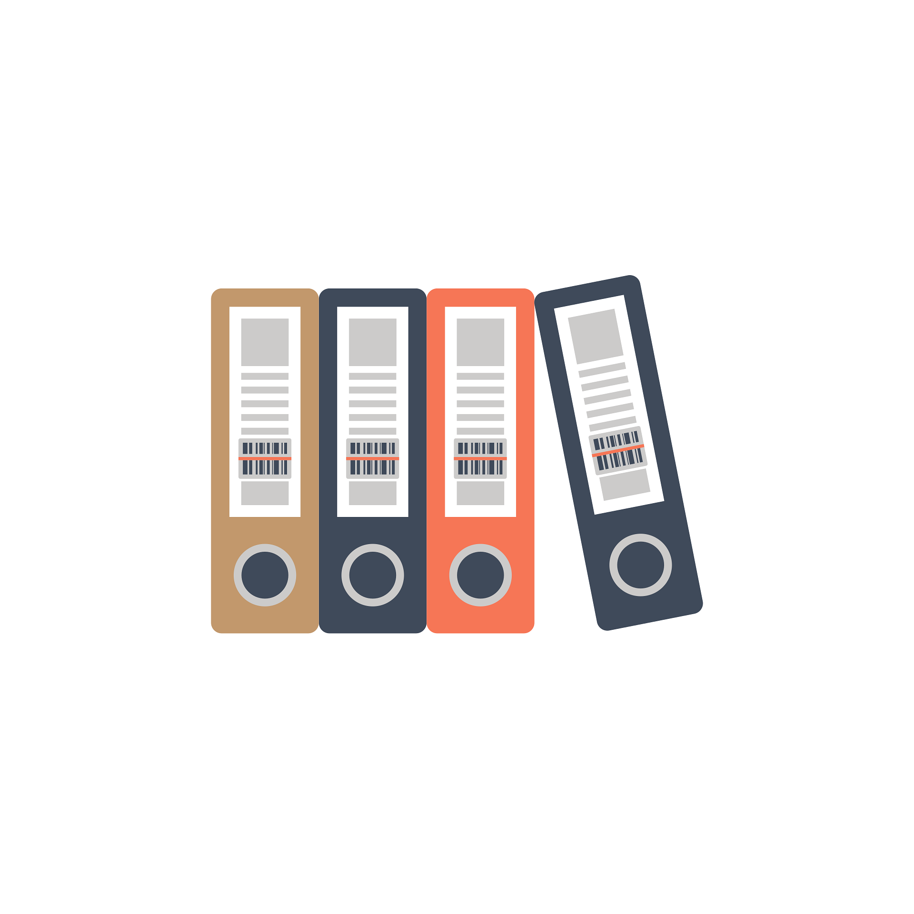
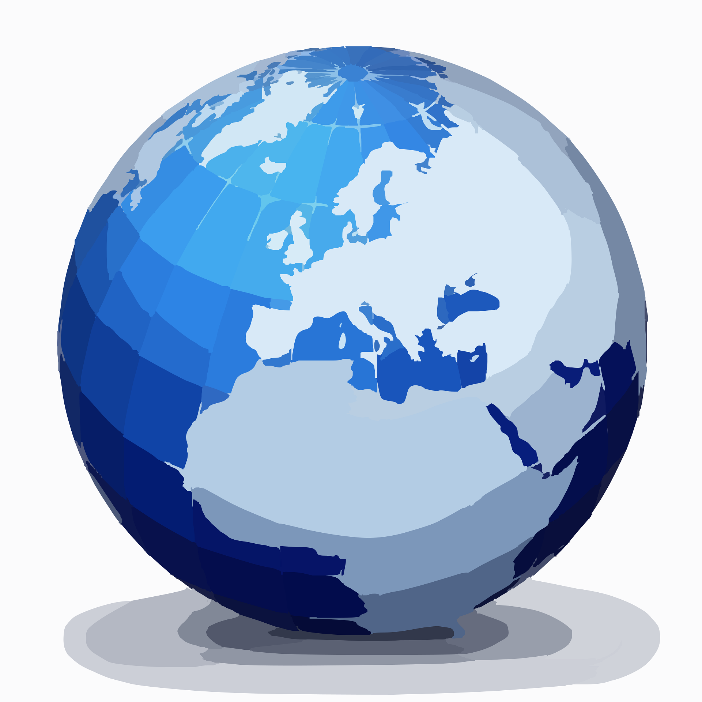
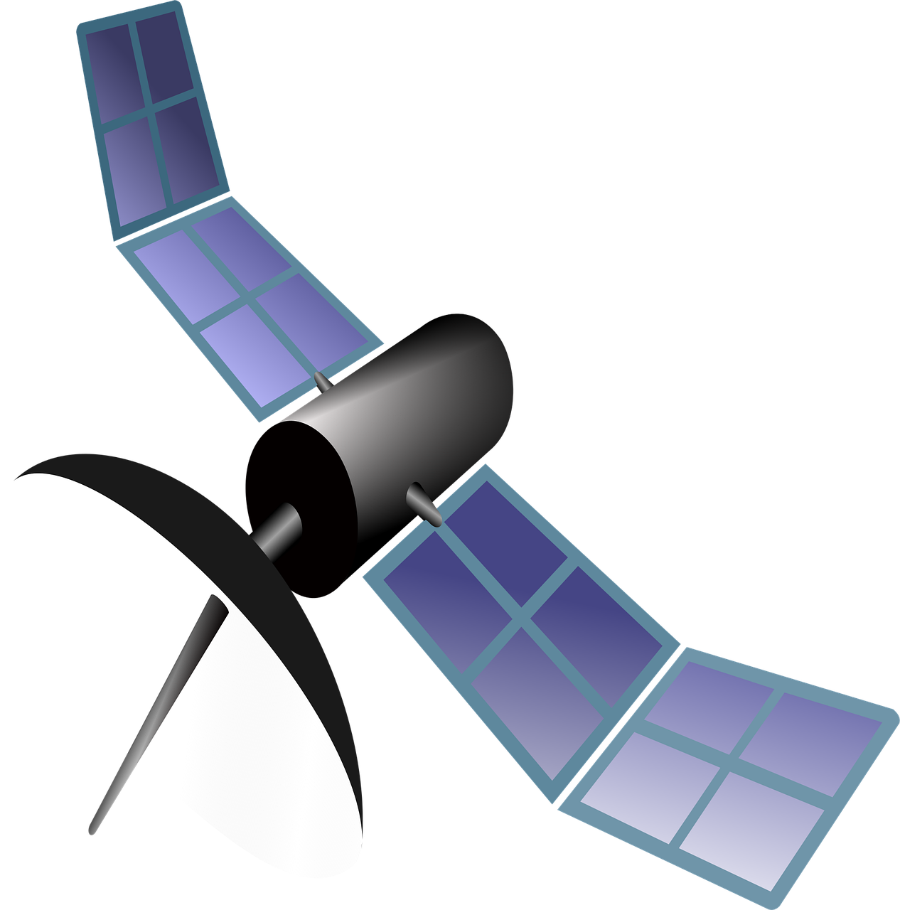
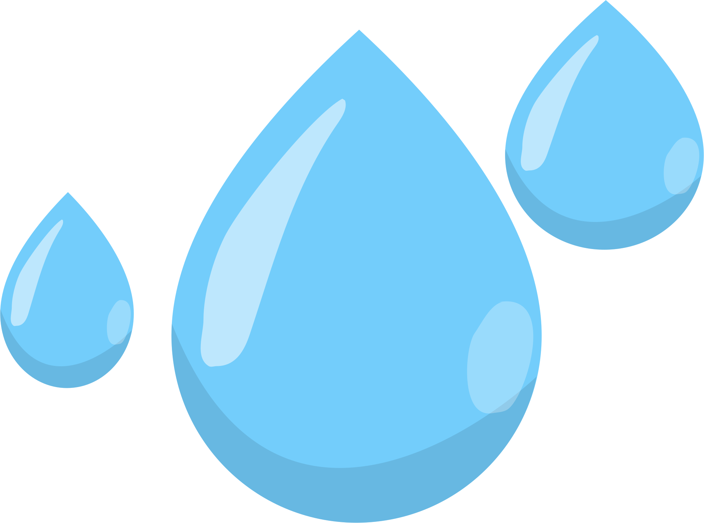
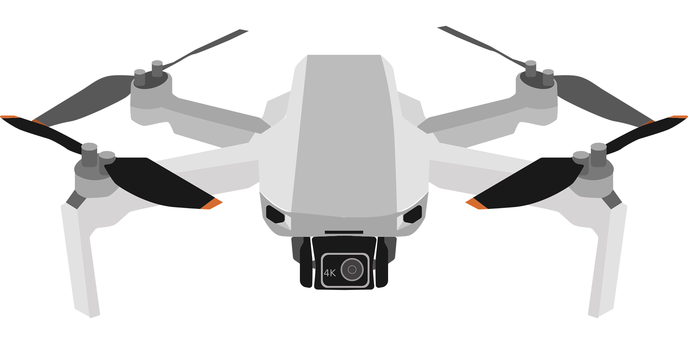

Qui sommes-nous ?
L'Institut Français de Recherche Aéronautique et Spatiale est un établissement public à caractère scientifique et technologique, placé sous la tutelle conjointe du ministère chargé de la Recherche et du ministère chargé de la Défense. Depuis sa fondation en 1962, l'IFRAS incarne l'ambition française en matière de conquête de l'espace et de maîtrise des technologies aéronautiques.
Organisé en huit départements scientifiques et deux directions techniques, l'institut réunit plus de 2 400 collaborateurs répartis sur quatre sites en France — Paris, Toulouse, Bordeaux et Saclay — ainsi que deux antennes internationales à Houston et Kourou. Notre mission est d'anticiper les ruptures technologiques, de former les chercheurs de demain et de valoriser nos travaux au bénéfice de l'industrie et de la société.
Partenaire privilégié du CNES, de l'ESA, de la NASA et de nombreux industriels du secteur spatial, l'IFRAS contribue chaque année à plusieurs dizaines de missions scientifiques et programmes d'exploration à l'échelle mondiale.
En savoir plus sur l'IFRAS →À la une

La prouesse des matériaux composites
Quand l'innovation des matériaux propulse la conquête spatiale. Les équipes de la DSMR publient leurs derniers résultats sur des composites à matrice céramique capables de résister à des températures de rentrée atmosphérique supérieures à 2 000 °C.
Lire l'article →
NK-125 : Nouveau moteur ultra-performant
Un concentré d'innovation pour une propulsion plus puissante, plus fiable et plus efficiente. Le NK-125 atteint une poussée spécifique record validée en chambre d'essais.
Lire l'article →
Publication du Plan Stratégique Scientifique IFRAS — PSS 2030
Le PSS 2030 définit les grandes orientations de recherche à l'horizon 2030. Il complète le contrat d'objectifs et de performance et la feuille de route de l'IFRAS.
Lire l'article →Fil d'actualité

Alliance internationale
L'IFRAS signe un accord-cadre de coopération scientifique avec le JAXA japonais, ouvrant la voie à des échanges de chercheurs et à des programmes communs d'observation solaire.
IA embarquée
Le département DSTI valide un nouveau système de navigation autonome capable de reconstruire sa trajectoire en temps réel sans liaison sol, lors d'une simulation orbitale de 72 heures.

Station orbitale
Déploiement réussi de trois nouveaux modules expérimentaux sur la station orbitale partenaire. Les équipes IFRAS piloteront les expériences de biologie en microgravité prévues au T2 2026.
Simulation Mars
ATLAS franchit une étape clé : reconstitution environnementale totale de la surface martienne atteinte en chambre pressurisée, incluant température, pression atmosphérique et flux UV.

Échanges thermiques
Publication dans Nature Physics des nouveaux modèles de calcul des échanges de condensation en microgravité, développés conjointement par le DPET et le DPM de l'IFRAS.

Challenge Drone IFRAS
10 grandes écoles d'ingénieurs ont relevé le défi lancé par l'IFRAS : concevoir en 48 h un drone autonome capable d'atterrir sur surface non préparée. Résultats dévoilés lors de la finale à Toulouse.
Agenda
ISABS 2026 — International Symposium on Astrobiology & Space Biology
Présentation des résultats ARTEMIS-9 et ORION-3 devant plus de 600 scientifiques internationaux. Ouvert aux chercheurs et doctorants accrédités. Retransmission publique disponible.
Conférence internationale d'astrophysique
Présentation des résultats ORION-3 et échanges avec les partenaires européens sur les biosignatures exoplanétaires détectées lors de la campagne d'observation 2025.
Simulation habitabilité martienne — Phase terrain
Phase expérimentale grandeur nature du programme ATLAS sur le site analogique du Désert d'Atacama. 12 chercheurs engagés pour 21 jours d'isolement total.
Sommet Spatial International — Paris Aerospace Week
Rencontres stratégiques avec agences et industriels du secteur. L'IFRAS présentera les grandes orientations du PSS 2030 et les opportunités de co-investissement.